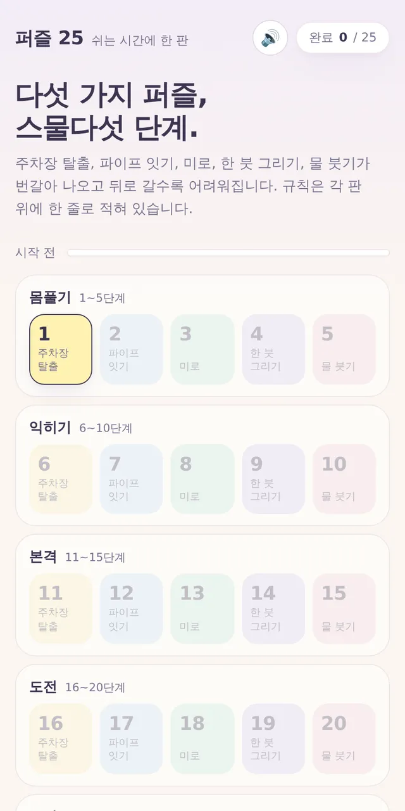
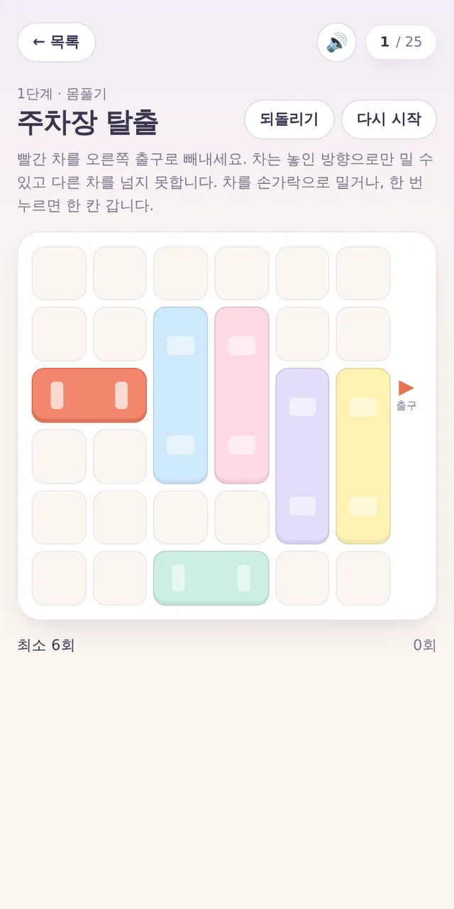
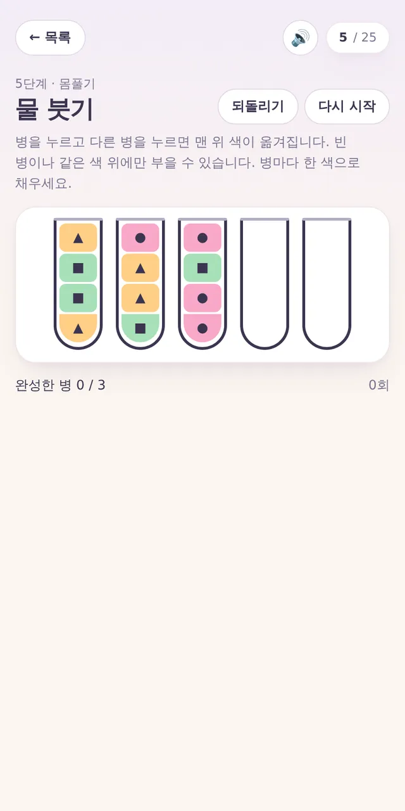

🧩 퍼즐 게임 · 무료 · 설치 없음
퍼즐 25
“다섯 가지 퍼즐, 스물다섯 단계.”
- 한 판 1~5분
- 퍼즐 5종 × 5단계
- 세로·가로 모두
- 기록 저장
회원가입 없이 누르면 바로 시작돼요
어떤 게임인가요?
쉬는 시간에 한 판. 다섯 가지 퍼즐이 번갈아 나오고, 몸풀기 → 익히기 → 본격 → 도전 → 끝판으로 갈수록 어려워져요.
🚗 주차장 탈출 — 빨간 차를 출구로 빼내요. 🔧 파이프 잇기 — 관을 돌려 하나로 이어요. 🌀 미로 — 주황색 칸까지 가요. ✏️ 한 붓 그리기 — 모든 선을 한 번씩만 지나요. 🧪 물 붓기 — 병마다 한 색으로 채워요.
규칙은 판 위에 한 줄로 적혀 있어서, 처음 보는 퍼즐도 바로 시작할 수 있어요.
이렇게 해요
- STEP 1
단계를 골라요
1단계부터 차례로. 한 단계를 깨면 다음 단계가 열려요.
- STEP 2
규칙대로 풀어요
판 위의 한 줄 규칙을 읽고 풀어요. 「되돌리기」와 「다시 시작」이 있어 부담 없어요.
- STEP 3
완료 팡파르!
몇 번 만에 풀었는지 기록돼요. 주차장 탈출은 최소 이동 수에 도전해 보세요.


이런 분께 추천해요
- 짧게 머리 식힐 퍼즐을 찾는 분
- 여러 종류 퍼즐을 골고루 좋아하는 분
- 한 단계씩 깨 나가는 성취감을 좋아하는 분
초반 단계는 1분이면 끝날 만큼 쉬워요. 스물다섯 단계를 모두 깨면 특별한 축하가 기다려요.
📱 어떤 기기에서 하면 좋을까요?
- 가장 좋아요휴대폰 세로·가로 모두
휴대폰에 맞춰 만든 게임이라 손가락으로 톡톡, 쓱쓱 편하게 풀 수 있어요.
- 가장 좋아요태블릿 세로·가로 모두
판이 커서 끝판의 큰 미로도 시원하게 보여요.
- 좋아요컴퓨터·노트북 마우스·키보드
미로는 화살표 키나 WASD로도 움직일 수 있어요.
오른쪽 위 메뉴(⋮ 또는 ···)에서 「다른 브라우저로 열기」를 눌러 크롬이나 사파리로 열어 주세요. 앱 안에서는 전체 화면이 안 되고 저장이 풀릴 수 있어요.
🍎 아이폰·아이패드에서는
- ① 사파리로 열기
세로로 들어도, 가로로 눕혀도 잘 돼요.
- ② 소리
누를 때마다 톡톡 소리와 완료 팡파르가 나요. 무음 스위치가 켜져 있으면 들리지 않아요. 🔊 버튼으로 끌 수도 있어요.
- ③ 기록
깬 단계와 기록은 그 기기에 저장돼요. 아이폰 사파리는 오래 들어가지 않은 사이트의 기록을 지우기도 해요.
🤖 갤럭시 등 안드로이드에서는
크롬이나 삼성 인터넷으로 열면 바로 돼요. 메뉴(⋮)에서 「홈 화면에 추가」를 해 두면 바로가기가 생겨요.
▶ 바로 해 보기
설치도, 회원가입도 필요 없어요.
퍼즐 25 시작하기game.edoori.co.kr/puzzle25/